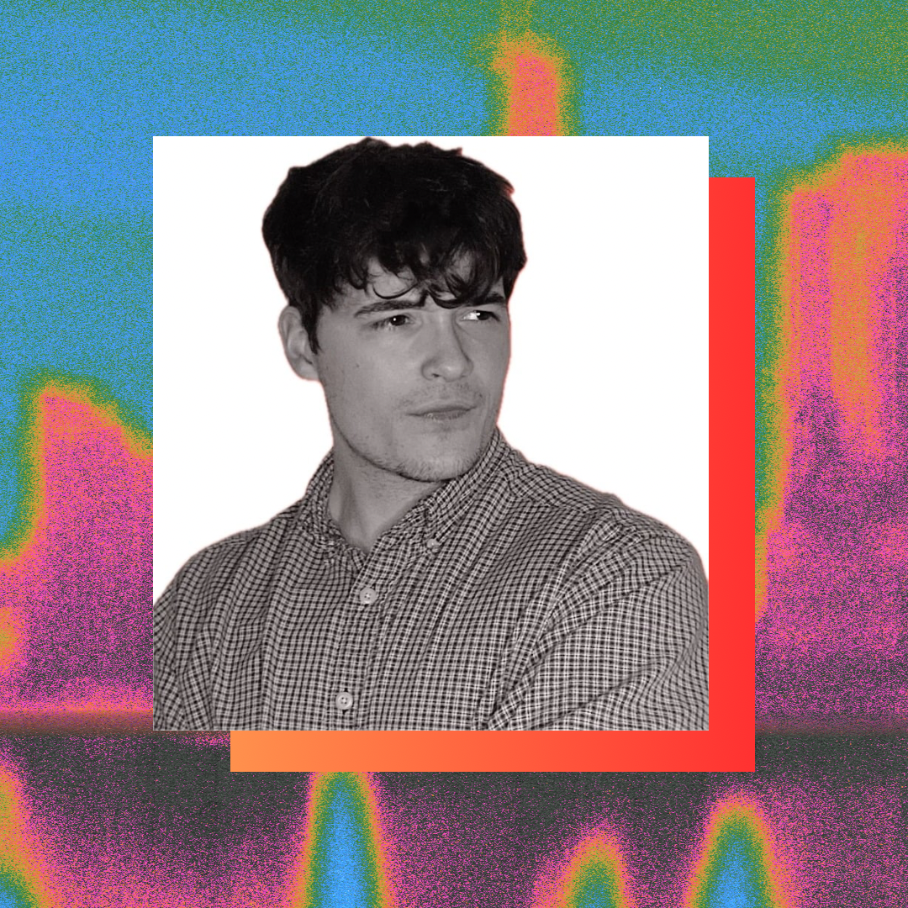

Leading across teams to design better IT systems and services.
Hello, I’m
Blade Burris.
An IT service designer with a foundation in user experience, creating clear, useful, and human-centered services.
About me
Taking a user-centered approach to elevate the experience of systems from top to bottom.

I’m an IT service designer with a background in informatics and human-computer interaction. After serving as a UX Design Lead, I evolved my focus from designing individual user experiences to improving the services and internal processes that support them.
My extensive experience designing for users helps me bring clarity, empathy, and practical structure to process management. I enjoy finding better ways for people and teams to work together, making complex systems easier to navigate and more effective to operate.
At a glance
Designing experiences that prioritize real user needs.
Always glad to meet people who care about making better products.
Certifications